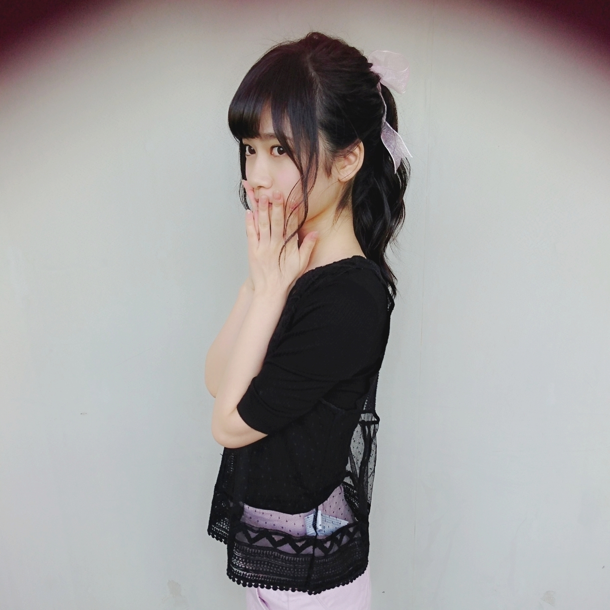
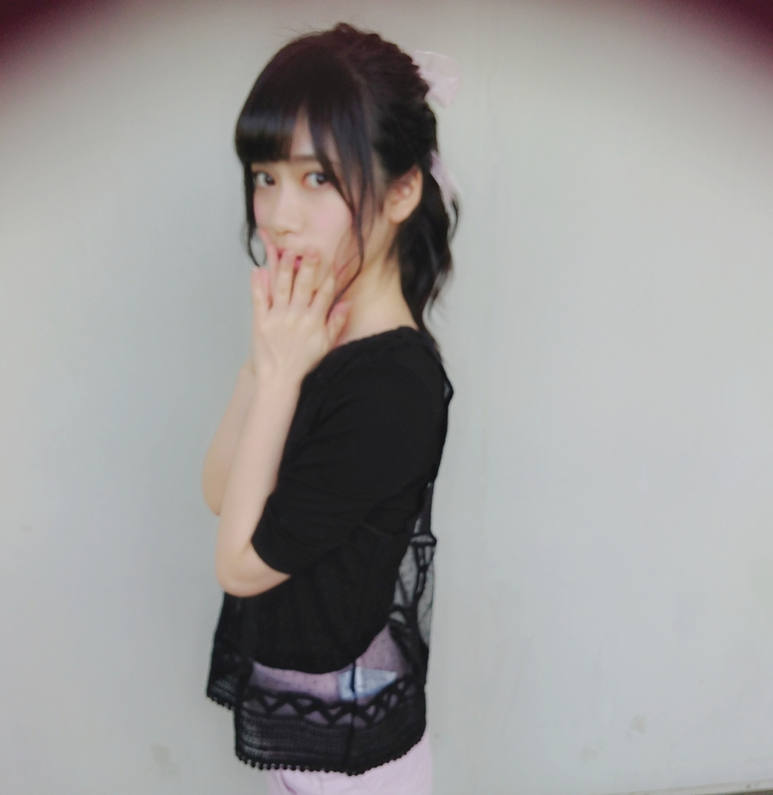
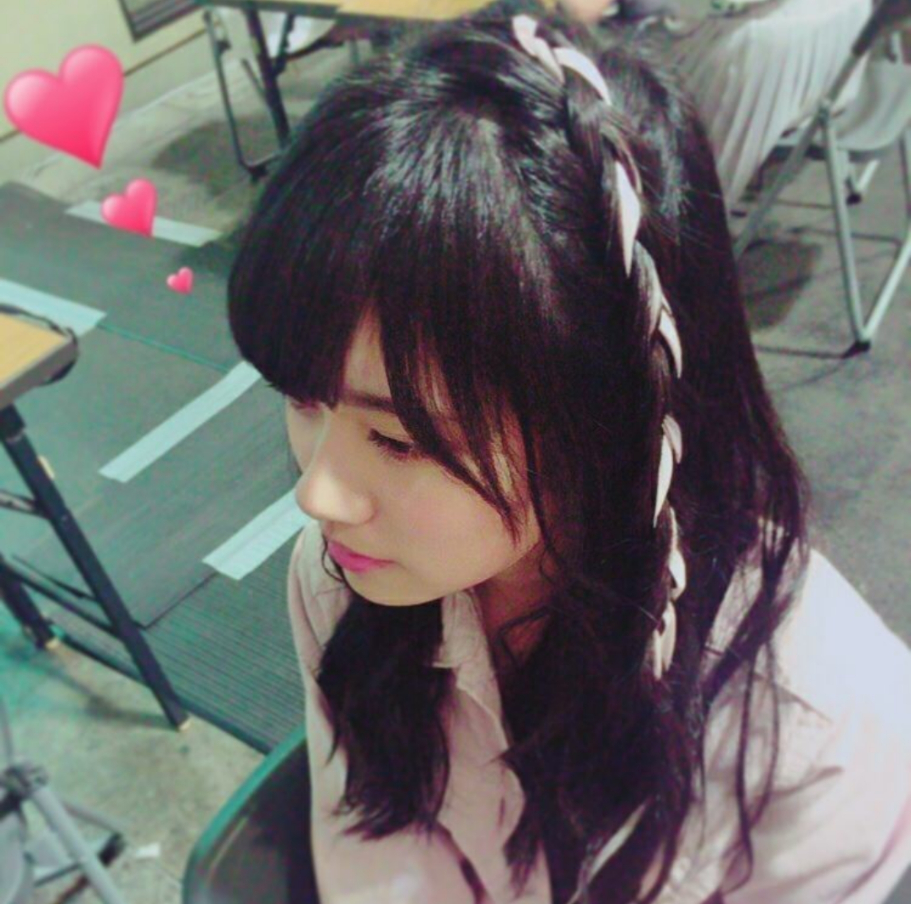
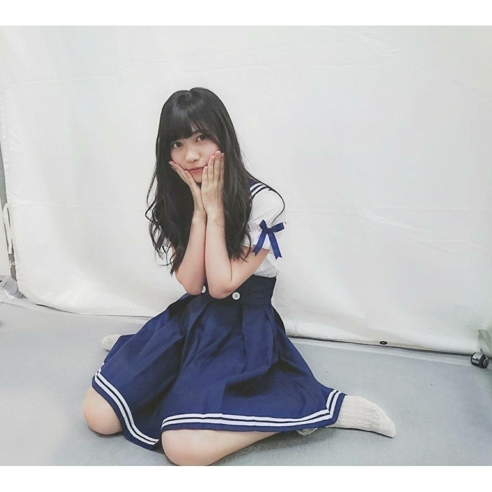
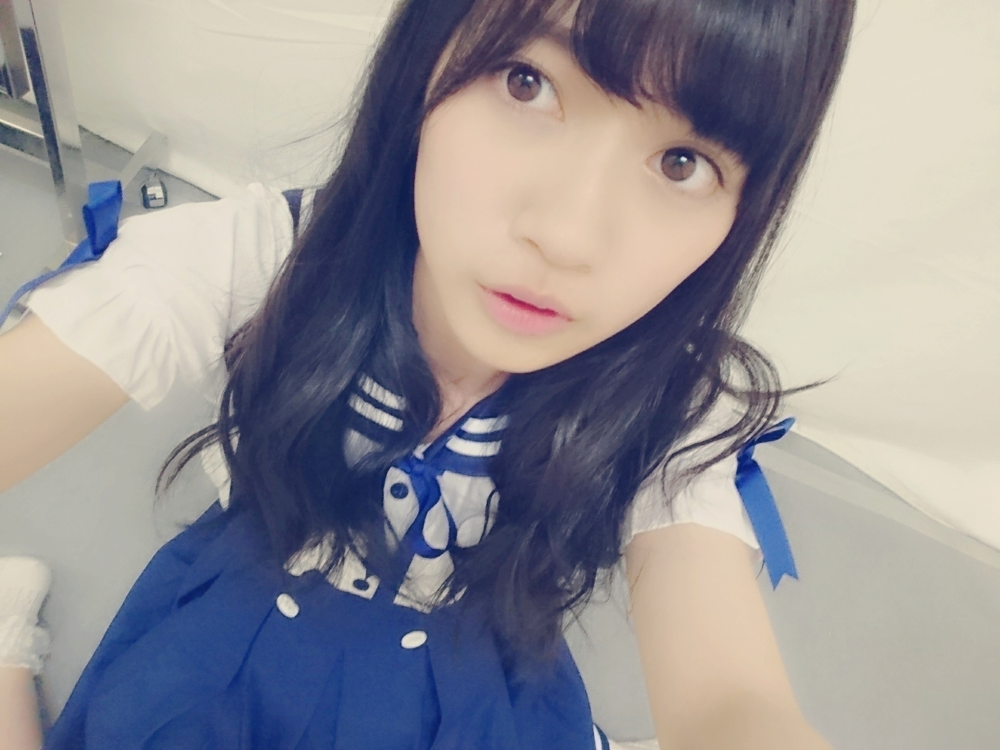
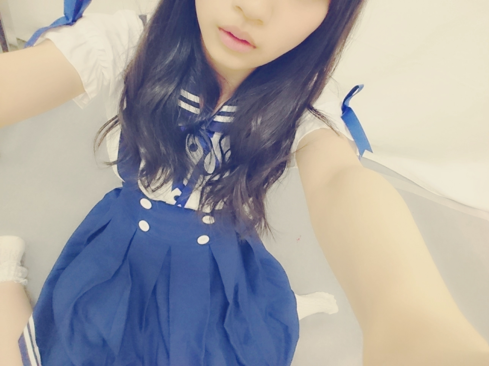

2016/0513Fri砂男
メガマウス( ˙v˙ )( ˙v˙ )( ˙v˙ )
サメに凄く興味があります
最近テレビで見た
メガマウスと言うサメを見てから一気に爆発して
おります
サメ詳しい方がいたら
教えて下さい
推しサメさんがいたらぜひ！
水族館行きたいな
海星ちゃん
エイ
らんぜの勢い
とまらんぜーーーーー
寺田です
宜しくお願い致します
そういえば、ちと遅くなりましたが
ゴールデンウイーク
皆さんはいかが過ごしましたか？
テラダは握手会が名古屋、京都とそれぞれ全国握手会と個別握手会2日間ずつあって
その他にもお仕事があり
とても充実した
ゴールデンウイークでした
そんな
名古屋と京都で行われた握手会について書きますね( ˙v˙ )
《名古屋全国握手会》
れなちこと山﨑怜奈とペアでした
2期生ペアで組めるようになれたのがなんか成長を感じました
昔は4人とかで組んでたので
なんか2人でしてるのって凄いなと
本当にありがとうございました！
ミニライブでは
捻挫後初となるライブで
ちと心配でしたがテーピングをしてもらい出ました
テーピングしてると踊りづらいよね
もっと気にせず飛び跳ねたい！！
《名古屋個別握手会》
ポニーテール馬のしっぽ( ˙v˙ )


私服はこんな感じでした
写真のは1、2部で着ていたものです
この日は黒とピンクでまとめてました
朝寒かったな、、、
4部までありがとうございます！
でも、正直な感想
久々に1、2部の列が途切れた時研究生時代の握手会の思い出がよぎりました。
この日にまた改めて
良い方向で気持ちにエンジンかかった気がしました
これを糧にもっともっと頑張りたいと心の底から思えました
もっと沢山の人に会いたい！
そして、笑顔になって頂く
乃木坂46に入った理由、目標を達成したいです！
そう強く思えた1日でした
ありがとうございました( ˙v˙ )

3、4部は頭にリボンを編んでもらってました( ˙v˙ )
みりあと部違いではありましたがお揃いだったんだー！
《京都全国握手会》
ミニライブ前の
影アナを絢音ちゃんとやったり
ミニライブも名古屋の反省を活かしつつ出来ました
握手会ペアは
まりかさん( ˙v˙ )
まりかさんは勿論
まりかさんのファンの方もお洒落な方古着好きの方が多くて楽しかったです( ˙v˙ )
まりかさんのブログに
『蘭世は私服でいつもどこかしら
赤を入れててとても可愛い』って書いてくださったのうれしいたけーです
無意識だったのですが
確かによくよく考えれば毎日ワンポイントに赤がある気がする( ˙v˙ )
ちと、風邪を引いてまして
声が小さめだったのが
申し訳ない
《京都個別握手会》
さっきも書いたのですが
風邪を引いてたので
声が、、、だったので
一応、張り紙をしていたのですが
その周りのデコレーションを我のお姉さんまあやさんがしてくれました！
写真撮れなかったので
来てくれた方限定になってしまいましたが
太陽、林檎の木、チューリップとかメッセージとか
沢山書いてくれたの( ˙v˙ )
まあやさん可愛い
お洋服は
こんな感じでした

1部：ストレート
2部：ハーフツインテール
3部：ツインテール巻き巻き
4部：私服、巻き巻きおろし
でした！
伊織ちゃんが最近凄く褒めてくれる
恥ずかしいくらい
嬉しいけど恥ずかしいよ
でも、伊織ちゃん大好き、、、
伊織が撮ってくれた写真
モバメで徐々に放出しますねお楽しみに
そして、この日はメイド服着ようかなーって考えてたのですが
凄くメイド服に興味があって着てみたい気持ちは山々だったのですが
まさか自分が捻挫したり風邪ひいたりで
コンディション的に満足行かないなーっと思ったので
急遽、第二の憧れのセーラー服ぽいものに
でも、メイド服らしさもあるフリフリ感のある
ハイブリッドなお衣装にしてみました
完全なるメイド服はもっと
万全なときにやりたい、、、( ˙v˙ )
凄くセーラームーン？っと言われたのですが
とくに何のコスプレでもなく、、、
でも、この言葉を聞いてから凄くセーラームーンのコスプレしてみたいなーって思いました！
あと、高校生のうちに
たくさん制服着たいなって！
思っていたよりこのお洋服が好評頂けたので
またどこがで着ます
お楽しみに( ˙v˙ )
合計4日間
直接会いに来てくれた方はもちろん
直接でなくても
会場に足を運んでくれた
皆さん( ˙v˙ )
ありがとうございます
これからも宜しくお願い致します！
皆が自然と笑顔になれる
お互い元気を貰える
これからも
そんな素敵な場であってほしいです。


さらばです。
アニメのコスプレしたい
《昨日の出来事》
モバメで
30通もメールしてみました
30通は意外とあっという間でした楽しかったよ(> <)
ホントはもっと送れそうでしたが
読んでくださった方との
秘密の約束通りにしておきます
また、いつかやるね！？
明日からも
頑張ろう！！！！
2016/05/13 13:36


コメント(636)
京都では個握お世話になりました(^^)(^^)
アルバム個握も京都とってるから、革ジャン着てた高校生で覚えといてね〜〜笑
またコメントします！
一生蘭世推しのゆうたより。
握手したいなああ
メールもありがとー
覚えててネーーー名古屋よかったヨーーーー
最近コメントできなくてごめんね
15日の握手行くね
メールの量あいかわらすすごいね(笑)
もっと多くして！！
Newsの方も楽しく読んでるよ
んで、かわいいな！
通信制限大丈夫かな！笑
参加した名古屋の握手会と
行けなかったけど見たかったハイブリッド。
まとめてくれてありがとう。笑
14th最後のパシフィコと
さっきのメールでギリギリ思い出したアルバム個握は幕張！
また参加するからよろしくねー(っ´ω`c)ﾏｯ...
次の握手会でも期待してますね(/ω＼)
モバメでモチベ上がったしとても嬉しかった(b・ω・d)イｪｧ♪
明日からも頑張ります( ･ㅂ･)و ̑̑
名古屋！！ほんとかわいかったよ！枚数少なくてごめんね！また次のシングルでね(^-^)/！！！名前覚えててよ／(o・ω・o)＼
ブログ更新お疲れ様！
京都のセーラー服見たかったなぁ〜
久しぶりのコメント^_^
ゴールデンウイークは、野球の合宿で握手会とか行けなかったけど、いつか絶対に行くから待っててね！
可愛い蘭世を拝みに行きまする(*^^*)
体調に気をつけて頑張って(｡•◡•｡)
蘭世の勢いとまらんぜ！！！
じゃ*･゜ﾟ･*:.｡..｡.:*･'(*ﾟ▽ﾟ*)'･*:.｡. .｡.:*･゜ﾟ･*
楽しみにしてるねwww
足が良くなってきたみたいでうれしいたけ！笑笑
万全の状態でメイドさん…
楽しみにしておりますよ
ぴょんぴょんしてる蘭世…
想像するだけで可愛い
15日の個握行きます！
初めて蘭世行くんで緊張するけど、楽しみたい！
またコメントするね！
昨日いっぱいモバメきて嬉しかったよ！！
次、蘭世に会えるのが7月のアルバム個握だから、それまでながいなぁー
でも、会えた時にたくさんお話してね！
ケガ治ってよかったね、無理しないでがんばれ！！(^^)(^^)
お疲れ様でした
これからも頑張って(/･ω･)/
更新ありがとう＼(^o^)／
待ってたよ〜！
いつもお疲れ様です！＼(^o^)／
全部かわええけど
京都個握の蘭世かわいい！！
初めて蘭世と握手したのは先月の個握かな！
というかそれが初めての握手会だった！
すごく楽しかったので来月のアルバム個握も行きます(((o(*ﾟ▽ﾟ*)o)))楽しみ楽しみ
つぎは多く取るね！！笑
んじゃ！
ゴールデンウィークは名古屋の握手会参加したので充実してたね(^ ^)
全握のミニライブも足のこと心配してたけど、ちゃんと踊れてたから良かったよ(^ ^)
個別も3部と4部お世話になりました！
相変わらず可愛くて話すの緊張します(^ ^)
昨日はモバメありがとね！
蘭世の気持ち伝わりました(^^)
昨日のメール良かったよ(^-^)/
その時がくるまで待ってるね～
応援しまっせっ
私もサメ好き！！！
特にジンベエザメが好き（´-`）.｡oO（♡）
後、握手会お疲れ様！
京都の個別も全握もいっぱい行ったよ
オオカミ少女と黒王子一緒に行きたいって言われたのが
ほんと嬉しくて、、笑笑
ほんとに一緒に行けたらなって笑
蘭世と一緒に行ったら2人して佐田くんにキュンキュン
してるんだろうなって思っちゃう笑
あ！あと私もアニメのコスプレしたい笑
何かいいコスプレないかな？？笑笑
らんぜの勢いとまらんぜ～♡
もう、蘭世好き 。笑
GW、なかなか充実してましたな
個握も部数が増えて、もっと頑張って支えたい、と思うようになりました。特に名古屋の朝と京都で。
関東は少し安心してます(^_^;)
それにしても、ハイブリッド！可愛かった。
髪型も頑張って色々してくれて、あらためて我々を楽しませてくれようという気持ちを感じます。ありがとうね。
じょしらくは見に行くのかな？
絢音ちゃんの回、行ってあげなよ！
でわ。
「寺」のうちわをぶら下げて
握手会に参加してる者です！
更新ありがとう！
個人ブログになってから
これで73回目の更新だよ！
ちなみに前回のブログのコメントは
1,000件越えてるからね！
いろんな人が何回もコメントしてるから
ちゃんと最後まで読んでね！
そしてコメントが1,000件越えるのは
個人ブログになってから16回目です！
ちょっと時間あったからいろいろ
調べてたんだよね…笑
これから蘭世のブログに『◯◯回』とか、
数字がつくようになればいいな！
そして今週１週間がんばりました！
大学は休まずに行ったよ！笑
当たり前かwww
5/4は京都の全握行かせてもらいました！
誕生日祝ってくれてありがと！
次の日の個握のハイブリッド。
可愛すぎるぞ……
そんな今週末はビックサイトで
個握があるね！
2部に３枚しかないんだけど
いくからね！
楽しみにしてるね！
昨日は３０通もありがとう！
これからも蘭世の勢いとまらんぜ！
和⊿
握手会ありがとね(^^)
(^^)⇦この顔文字お気に入りです✨
らんぜの勢いとまらんぜ✨
相変わらず読み応えのある文章で推せる(=ﾟωﾟ)ﾉ
昨日のモバメ楽しかったよー
30通ではらんぜ成分が満たされないよー笑
次も楽しみに待ってるね
京都で宝塚の話を聞いて1回行ってみたい！ってなったよ！
でも男って少ないんかなぁ笑
でも行ってみる！！
次の東京も行くんでよろしくねー
3.4部の髪型リボン巻いてあったのか！
可愛いと思ってたけどリボンだったのね！
京都で風邪を引いたってメールで見て心配だったけど影アナもやったんだ！！
ハイブリッド洋服も見たかったな…
昨日のメール沢山来たのはびっくりしたけど嬉しかったよ、蘭世の考え方とがわかった気がするよ。
ツインテールも可愛かったよ！
今週末握手会行くからよろしくね！
よみやすいっ！！！！！！
推しサメかぁ。。。笑
｢気持ちのいいめザメ｣かなぁ！！！笑
今朝、きもちよくおきれたーぁ♪♪
明日からも、がんばろぁ！
らんぜのいきおいとまらんぜぜぜっ！
昨日はモバメたくさん送ってくれて
嬉しかったよＯ(≧▽≦)Ｏ！！！
蘭世ちゃんの愛を感じました♡♡（笑）
ねえーめっちゃ可愛いんだけど(；；)
セーラー超可愛い！！！似合う(；；)
あ〜わたしも見たかったなあ、、、。
明後日の握手会ではどんな格好するの？？
わたしね、蘭世ちゃんのツインかハーフツイン
だいすきだからやってくれたら嬉しいな…！！
まあどんな蘭世ちゃんでも
だいすきだけどねヾ(＠⌒ー⌒＠)ノ（笑）
またコメントするね！だいすき！
蘭世も今度 調べてみてね〜（≧∇≦）
7月10日にパシフィコ横浜での2ndアルバムの個別握手会 蘭世ちゃんの所に行くねー(^ ^)
思い出したよ(・∀・)b
前回の京都以降愛媛から遠征する時は
毎回蘭世レーンに行ってますが、
蘭世の笑顔が俺は好きです！
また来たいなって思うような
素晴らしい笑顔をまた見たいよ(^O^)
モバメも30通ありがとね！
バイト終わって見たらすごいメール来てて
ビックリしたけど疲れを癒して
いただけたと思ってます！
蘭世からのモバメ楽しみにしてるね！
らんぜちゃんをさらに知ることが出来てとってもうれしかったですっ。笑
サメ好きなんだね〜！わたしも水族館が好きで、東は仙台から西は福岡まで巡りました( ´ ▽ ` )ﾉ
沖縄の某有名水族館も行ってみたいけど、今は静岡の深海魚がたくさんいる水族館に行きたいです！水族館についてならたくさん語れるので、ぜひらんぜちゃんとお話してみたいですｏ( ›_‹ )ｏ
最近は暑かったり寒かったり、気温の変化が激しいので体調管理に気をつけてね〜！では！
(長々とすみません…。)
今日もおつかれさまϵ( 'Θ' )϶
アルバム個握で横浜行くよ！
蘭世らしくあれ！！
コメントする